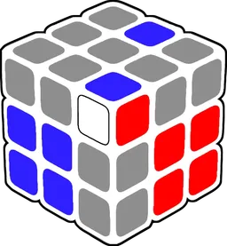
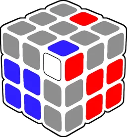
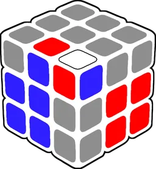
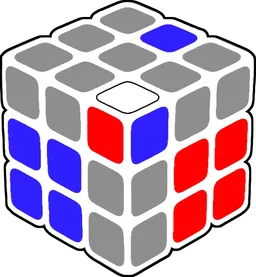
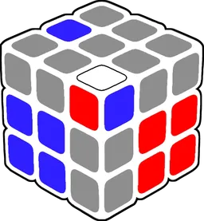
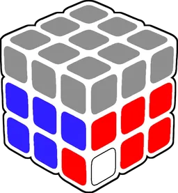
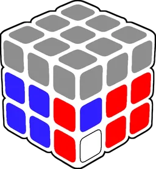
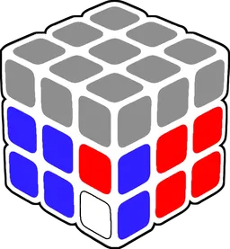

MÉTODO CFOP / CUBO 3×3×3
Atlas de algoritmos
Una guía visual para reconocer y resolver los 119 casos de F2L, OLL y PLL. Explora cada patrón y practícalo en 3D.
Abrir laboratorio EXPLORADOR CFOP
Biblioteca de casos
Primeras dos capas
Forma cuatro pares de esquina y arista e insértalos alrededor de la cruz inferior.
Básicos 4 casos

Blanco de lado 12 casos
AE1
Blanco de lado · AE1
R U' R' U R U' R' U2 R U' R'AE2
Blanco de lado · AE2
U' R U2 R' U F' U' FAE3
Blanco de lado · AE3
R U' R' U2 F' U' FAE4
Blanco de lado · AE4
F' U F U2 R U R'AE5
Blanco de lado · AE5
U' R U' R' U R U R'AE6
Blanco de lado · AE6
d R' U R U' R' U' RAE7
Blanco de lado · AE7
U F' U' F U2 F' U FAE8

Blanco de lado · AE8
U' R U R' U' R U2 R'AE9
Blanco de lado · AE9
U' R U R' U R U R'AE10

Blanco de lado · AE10
U' R U' R' U F' U' FAE11
Blanco de lado · AE11
y' U R' U2 R U2 R' U RAE12
Blanco de lado · AE12
U' R U2 R' U2 R U' R'Blanco arriba 8 casos
UP1
Blanco arriba · UP1
R U R' U2 R U R' U' R U R'UP2
Blanco arriba · UP2
R U R' U R U2 R' F' U2 FUP3

Blanco arriba · UP3
F' U2 F U F' U' FUP4
Blanco arriba · UP4
R U2 R' U' R U R'UP5
Blanco arriba · UP5
U' F' U2 F U' F' U FUP6

Blanco arriba · UP6
U R U2 R' U R U' R'UP7

Blanco arriba · UP7
U2 R U R' U R U' R'UP8
Blanco arriba · UP8
U2 F' U' F U' F' U FEsquina abajo 6 casos


Arista en medio 6 casos


Ambas en su ranura 5 casos
BM2
Ambas en su ranura · BM2
R U2 R' U R U2 R' U F' U' FBM3

Ambas en su ranura · BM3
R U' R' U R U2 R' U R U' R'BM4
Ambas en su ranura · BM4
(R U R' U') R U2 R' U' R U R'BM5

Ambas en su ranura · BM5
R U' R' U2 F' U' F U' F' U FBM6

Ambas en su ranura · BM6
F' U F U2 R U R' U R U' R'